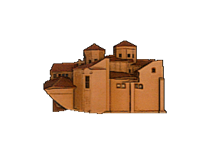

Parrocchia SS. Annunziata

Le sue origini risalgono al Duecento, tra le più antiche di Caccamo. Custodisce una grande tela di Guglielmo Borremans, l'Annunciazione, e stucchi della scuola di Serpotta. Nel Settecento ospitava anche un pavimento in maiolica dipinto dal maestro Nicolò Sarzana — lo stesso artigiano che realizzò poi il celebre pavimento della Badia poco distante. Ogni primavera, la chiesa si anima per la festa di San Giuseppe, tra le tradizioni più sentite del borgo.
⚠️ Nota: I luoghi di culto sono attivi e dedicati alle funzioni liturgiche. Per le visite turistiche si prega di rispettare gli orari consigliati ed evitare i momenti di celebrazione interna.
Orari:
Lun - Sab: 09:00 – 12:00 | Messe feriali ore 18:00. Domenica e Festivi visite nelle fasce: 08:30 - 09:30 e 10:30 - 12:00 (Messe festive ore 09:30, 12:00, 19:00).